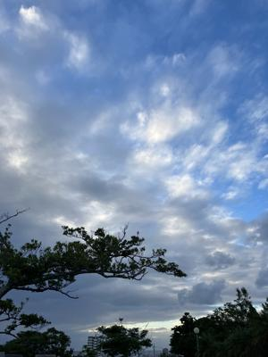
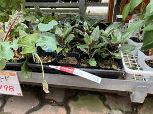
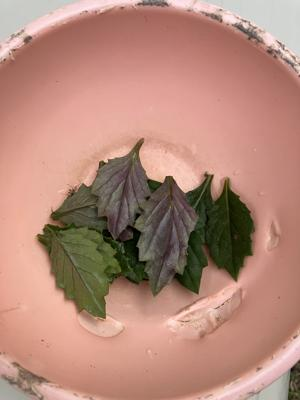
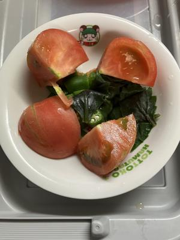
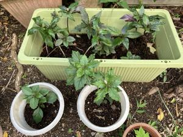

うるがいの話 ある日
最新: 連絡が来ない【うるがいの話 ある日】とは 一日だけのプログです
『うるがいの話』の最新一日だけのプログで、通信料が少なく経済的だ。カニの画像をクリックすると全ての日付が載る『うるがいの話』サイトを表示します
|
|
【うるがいの話】 うるがい(ｳﾙｶﾞｲ urugai)とは、『もずくがに』の名前でとても大きくなります。 |
|---|---|
|
|
【カミマヤーの話】 猫のことを方言でマヤーといいます。カミマヤー（kamimayaa）とは、神の猫のことです。 |
|
【たながぁの音楽】 たながぁ（ﾀﾅｶﾞｰ tanagaa）とは手長えびのことで、何種類かあり大きいのは車 エビぐらいになります。 |

|
【ぶながぁの話】 ぶながぁ(ﾌﾞﾅｶﾞｰ bunagaa)とは、赤い髪の毛、赤い身体、そして身長は１ｍ２０ｃｍ ぐらい、川の蟹を食べているの目撃された。場所は沖縄県国頭郡大宜味村のと ある村僕の隣近所に住んでいる爺さんから、聞いた話です。 |
|
|
【ギーマの話】 ギーマ(giima)とは、山原の里山に咲くスズランに似た、 花を付けます。実は食べられます、 気が付くと口の周りが紫になっています。 |
2023年11月03日 (金）連絡が来ない
14:45
   
お義母さんとこの新聞を、先月の１０月２３日（月）から止めた。お金の清算
の連絡がくるはずだが、来ない。９月１８日（月）に庭を剪定作業したが、業
者から請求がまだ来ない。７月２０日に ハンダマの苗 が入荷できたら連絡しま
すと言っていたＪＡの職員から連絡が来ない。いい応対をしてくれたＪＡの
職員からの連絡は、さすがにもうないだろう絡はないだろう。会話で教えても
らった、ハンダマの挿し木は３度試して成功。大きいものから、葉っぱを取っ
てお浸しにして食べる。メイクマンで一鉢１９８円で売っていた、買わない。

１４時０５分 ビットコインの総資産 ￥１５、０１８（↓２７６）